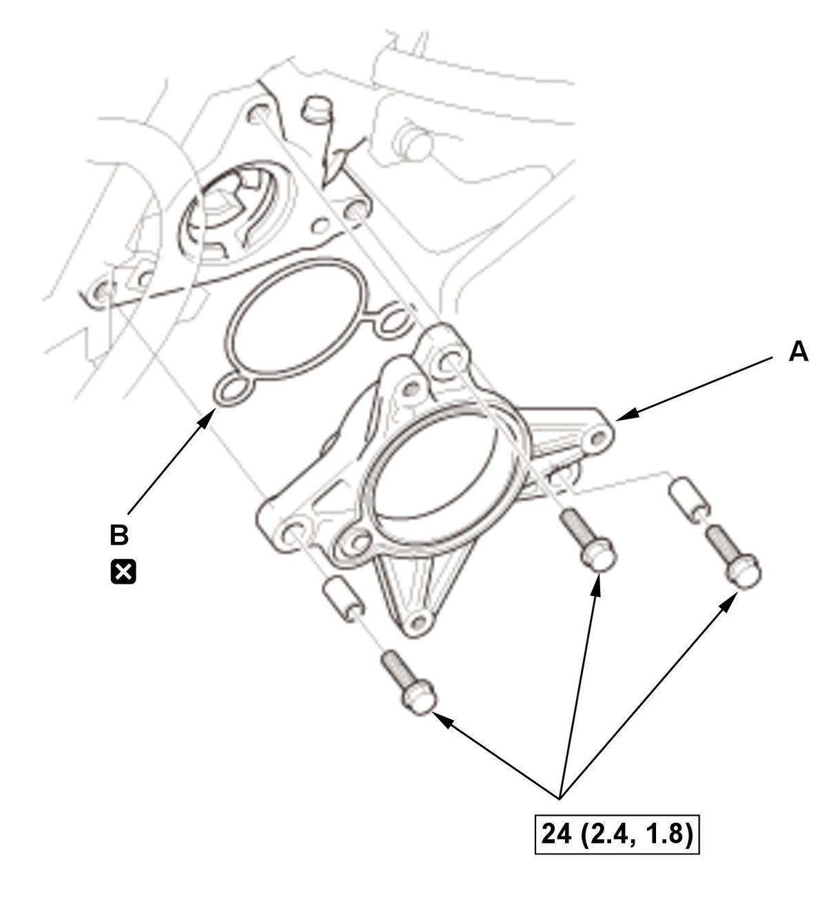
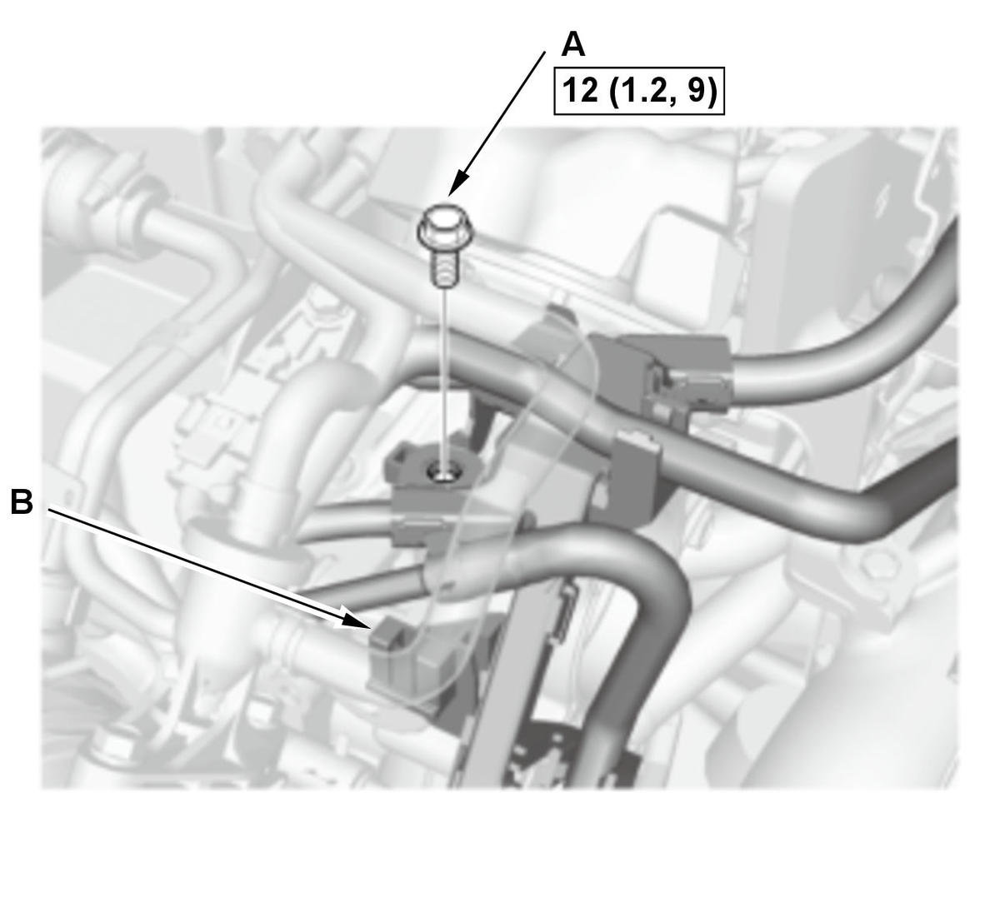
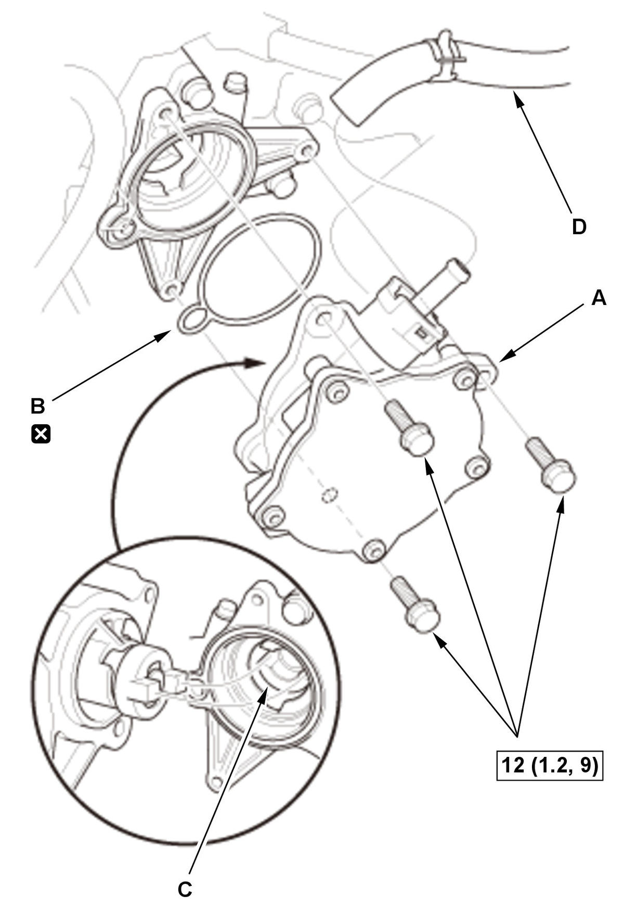

Brake Booster Vacuum Pump Removal, Installation, and Test (Type-R) (2017 2018 2019 2020 2021): Installation
NOTE: How to read the torque specifications .
Vacuum Pump Holder
- Vacuum Pump Holder - Install

Courtesy of HONDA, U.S.A., INC.1. Apply liquid gasket to the vacuum pump holder mating surface of the cylinder head and sensor cover .
2. Install the vacuum pump holder (A) with a new O-ring (B).
Courtesy of HONDA, U.S.A., INC.3. Install the bolt (A) and the clip (B).
Vacuum Pump
- Vacuum Pump - Install

Courtesy of HONDA, U.S.A., INC.1. Install the vacuum pump (A) with a new O-ring (B).
NOTE:- When installing the vacuum pump, set the vacuum pump and camshaft (C).
- Before installing, apply a small amount of engine oil to the new O-ring.
2. Connect the vacuum hose (D).